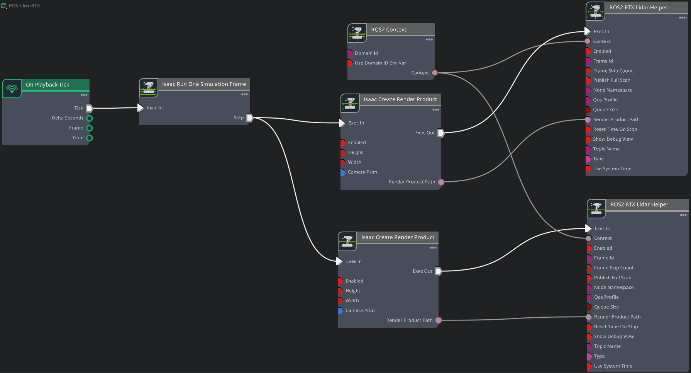
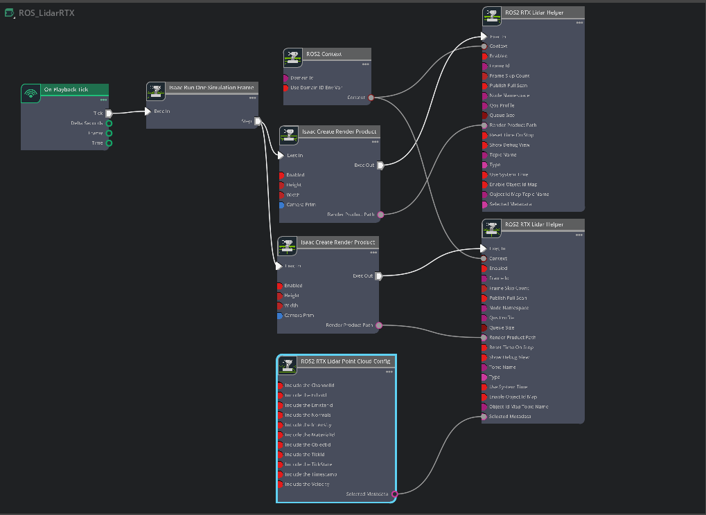

RTX Lidar Sensors#
Isaac Sim RTX 또는 Raytraced Lidar는 Solid State 및 Rotating Lidar 구성을 모두 지원합니다. 각 RTX Sensor는 올바르게 시뮬레이션하려면 자체 뷰포트에 연결되어야 합니다.
Warning
RTX Lidar 시뮬레이션이 실행 중일 때 Isaac Sim UI에서 창을 도킹하면 충돌이 발생할 수 있습니다. 창을 다시 도킹하기 전에 시뮬레이션을 일시 중지하세요.
Note
Isaac Sim 6.0에서 RTX Lidar 발행 속도는 helper 노드의 frameSkipCount가 아니라 OmniLidar prim의 omni:sensor:tickRate 속성에 의해 결정됩니다. OmniLidar prim의 경우, 스캔 누적이 올바르게 동작하려면 omni:sensor:tickRate가 omni:sensor:Core:scanRateBaseHz와 같아야 합니다. 마이그레이션 가이드 및 관련 알려진 문제 목록은 Multi-Tick Rendering을 참조하세요.
Learning Objectives#
이 예제에서 수행하는 작업:
RTX Lidar 센서 사용 방법 간략 소개.
RTX Lidar 센서 생성.
LaserScan 및 PointCloud2 메시지로 ROS2에 센서 데이터 발행.
메뉴 단축키를 사용하여 RTX Lidar 센서 publisher 생성.
모두 결합하여 RViz2에서 여러 센서 시각화.
Getting Started#
Important
Isaac Sim을 실행하기 전에 터미널에서 ROS 2를 적절히 소스했는지 확인하세요.
사전 준비사항
ROS 2 Cameras 튜토리얼을 완료했어야 합니다.
Isaac Sim 실행 전에
FASTRTPS_DEFAULT_PROFILES_FILE환경 변수가 설정되어 있고 ROS2 bridge가 활성화되어 있어야 합니다.선택 사항: Overview를 검토하고 RTX Sensor Annotators를 얻는 방법을 확인하여 RTX Lidar 센서의 내부 동작을 탐구하세요.
Turtlebot이 로드되고 이동하도록 URDF Import: Turtlebot 튜토리얼을 완료했어야 합니다.
이 튜토리얼의 선택적 부분에는 IsaacSim-ros_workspaces 저장소에 제공된
isaac_tutorialsROS 2 패키지가 필요합니다.ROS 2 workspace 환경이 올바르게 설정되어 있는지 확인하기 위해 ROS 2 Installation (Default)을 완료하세요.
Note
Windows 11에서는 머신 구성에 따라 RViz2가 제대로 열리지 않을 수 있습니다. WSL에서 RViz2로 시각화할 수 없는 대역폭이 많이 필요한 토픽이 있을 수 있습니다.
Adding a RTX Lidar ROS 2 Bridge#
2D Lidar 센서를 추가합니다. Create > Sensors > RTX Lidar > NVIDIA > Example Rotary 2D로 이동합니다.
합성 Lidar 센서를 로봇의 Lidar 장치와 같은 위치에 배치하려면, Lidar prim을
/World/tb3_burger_processed/Geometry/base_footprint/base_link/base_scan아래로 드래그합니다. Property 탭 내의 Transform 필드에서 변위를 0으로 설정합니다. 이제 Lidar prim이 로봇의 스캐닝 장치와 겹쳐야 합니다.3D Lidar 센서를 추가합니다. Create > Sensors > RTX Lidar > NVIDIA > Example Rotary로 이동합니다.
합성 Lidar 센서를 로봇의 Lidar 장치와 같은 위치에 배치하려면, Lidar prim을
/World/tb3_burger_processed/Geometry/base_footprint/base_link/base_scan아래로 드래그합니다. Property 탭 내의 Transform 필드에서 변위를 0으로 설정합니다. 이제 Lidar prim이 로봇의 스캐닝 장치와 겹쳐야 합니다.OmniGraph 노드를 사용하여 ROS 2 bridge를 연결합니다. Stage 패널에서
/World/tb3_burger_processed/Geometry/base_footprint/base_link/base_scan을 선택합니다 — lidar publisher 그래프는 특정 센서에 연결되어 있으므로 로봇 루트가 아닌 센서 prim 옆에 위치해야 합니다. Window > Graph Editors > Action Graph를 열고 New Action Graph를 클릭하여ROS_LidarRTX로 이름 지정합니다. 그래프에 다음 노드를 추가합니다:On Playback Tick — Play를 눌렀을 때 다운스트림 노드를 트리거합니다.
ROS 2 Context Node — ROS 2 Domain ID를 설정합니다 (기본값 0; 실행 환경에서
ROS_DOMAIN_ID를 상속하려면Use Domain ID Env Var를 체크하세요).Isaac Run One Simulation Frame — 성능을 위해 시작 시 render-product 파이프라인을 한 번 실행합니다.
Isaac Create Render Product —
cameraPrim을 1단계의 2D Lidar로 설정합니다.Isaac Create Render Product (두 번째 인스턴스) —
cameraPrim을 3단계의 3D Lidar로 설정합니다.ROS 2 RTX Lidar Helper — 2D render product 출력을 연결합니다.
topicName을scan으로,frameId를base_scan으로 설정합니다.ROS 2 RTX Lidar Helper (두 번째 인스턴스) — 3D render product 출력을 연결합니다.
type을point_cloud로,topicName을point_cloud로,frameId를base_scan으로 설정하고 Publish Full Scan을 체크합니다.

{kind=link}
Note
ROS2 RTX Lidar Helper 노드에서 type이 laser_scan으로 설정된 경우, LaserScan 메시지는 RTX Lidar가 전체 스캔을 생성할 때만 발행됩니다.
회전 Lidar의 경우 전체 360도 회전이며, solid state Lidar의 경우 프로파일에서 구성된 Lidar의 전체 방위각입니다.
Lidar 회전율과 타임 스텝 크기에 따라 전체 회전 스캔을 완료하는 데 여러 프레임이 걸릴 수 있습니다. 예를 들어, 렌더 스텝 크기 1/60초에서 회전율이 10Hz인 회전 Lidar는 전체 스캔을 완료하는 데 6프레임이 걸리므로 LaserScan 메시지가 6프레임마다 한 번씩 발행됩니다. Solid state Lidar는 단일 프레임에서 전체 스캔을 완료하므로 해당 LaserScan 메시지는 매 프레임마다 발행됩니다.
PointCloud 메시지는 ROS2 RTX Lidar Helper 노드의 Publish Full Scan 설정 값에 따라 매 프레임마다 또는 전체 스캔이 누적된 후에 발행됩니다.
그래프가 올바르게 설정된 후, Play를 눌러 시뮬레이션을 시작합니다. RTX Lidar가 LaserScan과 PointCloud2 메시지를 전송하고 RViz에서 시각화될 수 있는지 확인합니다.
RViz 시각화를 위해:
소스된 터미널에서 RViz2 (
rviz2)를 실행합니다.Isaac Sim에서 RTX Lidar의 lidar 프레임은 base_scan으로 설정되어 있으니, RViz의 fixed frame 이름을 그에 맞게 업데이트합니다.
LaserScan 시각화를 추가하고 topic을 /scan으로 설정합니다.
PointCloud2 시각화를 추가하고 topic을 /point_cloud로 설정합니다.
{kind=link}
Graph Shortcut#
여러 Lidar 센서 그래프를 구성하는 메뉴 단축키가 있습니다. Tools > Robotics > ROS 2 OmniGraphs > RTX Lidar로 이동합니다.
ROS2 그래프가 목록에 없으면 ROS2 bridge를 활성화해야 합니다. 그래프를 채우는 데 필요한 파라미터를 묻는 팝업이 나타납니다. Graph Path, Lidar Prim, frameId, 필요한 경우 Node Namespace를 제공하고, 발행하려는 데이터의 체크박스를 선택해야 합니다. 기존 그래프에 노드를 추가하려면 Add to an existing graph? 박스를 체크하세요. 이렇게 하면 기존 그래프에 노드가 추가되고, 이미 존재하는 경우 기존 tick 노드, context 노드, simulation time 노드를 사용합니다.
Running the Example#
ROS2 환경이 소스된 새 터미널에서 다음 명령어를 실행하여 RViz를 시작하고 Lidar point cloud를 표시합니다.
ros2_ws를 적절히humble_ws로 교체하세요.rviz2 -d <ros2_ws>/src/isaac_tutorials/rviz2/rtx_lidar.rviz
샘플 스크립트를 실행합니다:
./python.sh standalone_examples/api/isaacsim.ros2.bridge/rtx_lidar.py
씬 로딩이 완료된 후, 시뮬레이션 중인 회전 Lidar 센서의 point cloud를 확인합니다.
RTX Lidar Script Sample#
샘플 코드의 대부분은 일반적이지만, 센서를 생성하고 시뮬레이션하는 데 필요한 몇 가지 특정 부분이 있습니다. 이 샘플에서는 isaacsim.sensors.experimental.rtx Python API를 사용하여 2D 및 3D RTX Lidar 센서를 생성합니다.
3D RTX Lidar 센서 생성:
from isaacsim.sensors.experimental.rtx import Lidar
# Example_Rotary scans at 10 Hz; tick_rate must match scanRateBaseHz so that scan
# accumulation and multi-tick rendering produce a full scan per tick.
lidar = Lidar.create(
path="/sensor",
config="Example_Rotary",
tick_rate=10.0,
translations=[[0.0, 0.0, 1.0]],
)
여기서 Example_Rotary는 3D Lidar 구성 USD를 선택합니다. Lidar를 example solid-state 구성으로 전환하려면, config="Example_Rotary"를 config="Example_Solid_State"로 교체하고 tick_rate를 해당 에셋의 omni:sensor:Core:scanRateBaseHz 값으로 업데이트합니다 (OmniLidar Tick Rate Must Equal scanRateBaseHz 참조).
render product를 생성하고 이 센서를 연결합니다:
import omni.replicator.core as rep
# RTX sensors are cameras and must be assigned to their own render product.
hydra_texture = rep.create.render_product(lidar.paths[0], [1, 1], name="Isaac")
렌더링된 RTX Lidar point cloud 데이터를 가져와 ROS에 발행하는 후처리 파이프라인을 생성합니다:
writer = rep.writers.get("RtxLidarROS2PublishPointCloud")
writer.initialize(topicName="point_cloud", frameId="base_scan")
writer.attach([hydra_texture])
2D RTX Lidar 센서 생성:
lidar_2D = Lidar.create(
path="/sensor_2D",
config="Example_Rotary_2D",
tick_rate=10.0,
translations=[[0.0, 0.0, 1.0]],
)
Example_Rotary_2D는 2D Lidar 구성 USD를 선택합니다.
3D Lidar 센서와 마찬가지로, render product와 렌더링된 RTX Lidar laser scan 데이터를 ROS에 발행하는 후처리 파이프라인을 생성합니다:
hydra_texture_2D = rep.create.render_product(lidar_2D.paths[0], [1, 1], name="Isaac")
writer = rep.writers.get("RtxLidarROS2PublishLaserScan")
writer.initialize(topicName="scan", frameId="base_scan")
writer.attach([hydra_texture_2D])
Note
aux_output_level 및 accumulate_outputs를 포함하여 Lidar.create가 지원하는 추가 파라미터에 대한 자세한 내용은 RTX Lidar Sensor와 API Documentation을 참조하세요.
(Optional) Exposing RTX Lidar Metadata in ROS2 PointCloud2#
RTX Lidar 센서는 선택적으로 Cartesian point cloud 외에 반환 강도 및 타임스탬프, 개별 반환을 생성하는 객체의 재질, 개별 반환을 생성하는 prim의 prim path 등 메타데이터를 노출할 수 있습니다. 노출 가능한 전체 메타데이터 목록은 IsaacCreateRTXLidarScanBuffer (deprecated) Annotator에 설명되어 있습니다.
메타데이터를 생성하려면 OmniLidar prim의 _replicator:rendervar:GenericModelOutput:channels 속성에 BASIC (또는 더 높은 수준)을 포함하도록 설정해야 합니다 — 동등하게, Lidar(..., aux_output_level="BASIC") (또는 더 높게)로 prim을 구성합니다. Array Properties 위젯에서 속성을 설정하는 방법은 Auxiliary Output Level and the GenericModelOutput RenderVar를 참조하세요. 일부 메타데이터 필드는 런타임에 추가적인 carb 설정이 필요합니다; IsaacCreateRTXLidarScanBuffer (deprecated) Annotator 문서의 표를 참조하세요.
그런 다음 Isaac Sim이 메타데이터를 PointCloud2 메시지에 쓰도록 구성해야 합니다. 여러 가지 방법이 있습니다.
Exposing Metadata through ROS2 OmniGraphs#
RTX Lidar 센서를 생성하고 ROS2 OmniGraph 노드를 action graph에 추가하려면 Adding a RTX Lidar ROS 2 Bridge 섹션의 단계를 따르세요. 그런 다음:
시뮬레이션이 실행 중이면 중지합니다.
씬을 USD로 저장합니다.
Isaac Sim을 닫습니다.
실행 명령에
--/rtx-transient/stableIds/enabled=true를 추가하여 Isaac Sim을 시작하거나 재시작합니다. 이 설정은 RTX 렌더러가 RTX Lidar 메타데이터의 일부로 128비트 Object ID를 생성하도록 활성화합니다.방금 저장한 USD를 다시 엽니다.
Window > Graph Editors > Action Graph로 이동하여 시각적 스크립팅 편집기를 엽니다.
이전에 생성한 action graph를 선택합니다.
그래프에 ROS2 RTX Lidar Point Cloud Config 노드를 추가합니다.
Include the Intensity와 Include the ObjectId 체크박스를 선택합니다. 이렇게 하면 강도와 object ID 메타데이터가 PointCloud2 메시지에 기록됩니다.
ROS2 RTX Lidar Point Cloud Config 노드의
selectedMetadata출력을 3D Lidar 센서의 ROS2 RTX Lidar Helper 노드의selectedMetadata입력에 연결합니다.3D Lidar 센서의 ROS2 RTX Lidar Helper 노드에서 enableObjectIdMap 체크박스를 선택합니다. 이렇게 하면 Isaac Sim이
/object_id_map토픽으로 Object ID 맵이 포함된String메시지를 발행하게 됩니다.아직 선택되지 않은 경우 3D Lidar 센서의 ROS2 RTX Lidar Helper 노드에서 enabled 체크박스를 선택합니다.
Example_Rotary Lidar prim을 선택하고,
_replicator:rendervar:GenericModelOutput:channels속성을["FULL"]로 설정합니다 — 단계별 Array Properties 워크플로는 Auxiliary Output Level and the GenericModelOutput RenderVar를 참조하세요.Play를 눌러 시뮬레이션을 시작합니다.
{kind=link}

RViz 시각화를 위해:
소스된 터미널에서 RViz2 (
rviz2)를 실행합니다.Isaac Sim에서 RTX Lidar의 lidar 프레임은 base_scan으로 설정되어 있으니, RViz의 fixed frame 이름을 그에 맞게 업데이트합니다.
PointCloud2 시각화를 추가하고 topic을 /point_cloud로 설정합니다.
{kind=link}
RViz2가 PointCloud2 시각화 아래 Channel Name을 자동으로 intensity로, Color Transformer를 Intensity로 설정하여 PointCloud2 메시지의 강도 채널 시각화를 활성화하는지 확인합니다. 대부분의 다른 메타데이터 채널은 기본적으로 시각화되지 않지만, HitNormal은 선택 시 반환을 생성한 객체 표면의 법선 벡터를 시각화합니다.
Exposing Metadata Through Python Script#
aux_output_level="FULL"을 사용하여 3D RTX Lidar 센서, render product, 그리고 PointCloud2 메시지에 포함될 보조 필드를 선택하는 output* 플래그가 있는 RtxLidarROS2PublishPointCloud writer를 생성합니다:
import omni.replicator.core as rep
from isaacsim.sensors.experimental.rtx import Lidar
# Create an RTX Lidar with FULL auxiliary output level so the GenericModelOutput buffer carries
# every per-point metadata field (intensity, object ID, hit normal, ...). This sets
# ``_replicator:rendervar:GenericModelOutput:channels = ["FULL"]`` on the OmniLidar prim.
lidar = Lidar.create(
path="/World/sensor_with_metadata",
config="Example_Rotary",
tick_rate=10.0,
aux_output_level="FULL",
translations=[[0.0, 0.0, 1.0]],
)
# RTX sensors must be assigned to their own render product.
hydra_texture = rep.create.render_product(lidar.paths[0], [1, 1], name="Isaac")
# Attach the RTX-Lidar PointCloud2 writer directly. The ``output*`` flags select which
# auxiliary fields are unpacked from the GMO buffer and written into the PointCloud2 message.
writer = rep.writers.get("RtxLidarROS2PublishPointCloud")
writer.initialize(
topicName="point_cloud",
frameId="base_scan",
outputIntensity=True,
outputObjectId=True,
)
writer.attach([hydra_texture])
# Publish the Object-ID-to-prim-path map on a separate topic so subscribers can resolve
# returns back to USD prims.
object_id_map_writer = rep.writers.get("ROS2PublishObjectIdMap")
object_id_map_writer.initialize(topicName="object_id_map")
object_id_map_writer.attach([hydra_texture])
이 코드 조각은 Lidar.create(..., aux_output_level="FULL")를 통해 lidar prim에 _replicator:rendervar:GenericModelOutput:channels = ["FULL"]를 작성합니다. 속성 흐름 설명과 다른 보조 수준을 가진 여러 RTX 센서가 stage를 공유할 때의 알려진 문제는 Auxiliary Output Level and the GenericModelOutput RenderVar를 참조하세요.
또한, SimulationApp을 호출할 때 다음과 같이 --/rtx-transient/stableIds/enabled=true를 지정합니다:
from isaacsim import SimulationApp
# Example for creating a RTX lidar sensor and publishing PointCloud2 data
simulation_app = SimulationApp({"headless": False, "extra_args": ["--/rtx-transient/stableIds/enabled=true"]})
타임라인이 재생되면 PointCloud2 메시지가 원하는 메타데이터와 함께 /point_cloud 토픽으로 발행됩니다.
Interpreting Timestamp Metadata#
Timestamp가 메타데이터에 포함된 경우, PointCloud2 메시지에는 timestamp_0과 timestamp_1이라는 두 개의 uint32 필드가 포함됩니다. 이것들은 각각 시뮬레이션 시작 이후 나노초 단위의 포인트별 타임스탬프를 나타내는 단일 uint64 값의 하위 및 상위 32비트를 보유합니다. 다음과 같이 uint64 값을 재구성합니다:
# Example: a per-point timestamp pulled from a PointCloud2 message field.
# In a real subscriber you'd read these from points["timestamp_0"] and
# points["timestamp_1"] (uint32 each).
timestamp_0 = 0xCAFEBABE # low 32 bits
timestamp_1 = 0x12345678 # high 32 bits
# Recombine to a single uint64 nanosecond value.
ts_uint64_ns = (int(timestamp_1) << 32) | int(timestamp_0)
Note
이 인코딩은 Isaac Sim 6.0에서 도입되었습니다. 이전 버전에서는 timestamp가 단일 float32 필드 (datatype=7, count=1)로 발행되었습니다.
이전 인코딩을 기준으로 작성된 구독자는 두 개의 uint32 필드를 읽고 재결합하도록 업데이트해야 합니다.
Interpreting Object ID Metadata#
Semantic Segmentation with RTX Sensor using Object IDs에 설명된 대로, Object ID 메타데이터는 해당 반환을 생성한 객체의 prim path에 매핑되는 안정적이고 고유한 128비트 부호 없는 정수입니다.
이것은 object ID를 prim path에 매핑한 후 prim에서 의미론적 레이블을 검색하여 씬의 의미론적 세그멘테이션에 사용할 수 있습니다. ObjectId가 메타데이터에 포함된 경우, PointCloud2 메시지에는 4개의 uint32 필드 object_id_0, object_id_1, object_id_2, object_id_3가 포함됩니다.
위의 예제 중 하나에서 타임라인을 재생한 후, 새 터미널에서 Isaac Sim ROS workspace가 소스되어 있는지 확인하고, 개별 반환을 생성하는 객체의 prim path를 출력하는 다음 노드를 실행합니다:
ros2 run isaac_tutorials ros2_object_id_subscriber.py
Object ID 메타데이터를 해석하는 방법에 대한 자세한 내용은 구독자 스크립트를 참조하세요. 관련 부분이 참조용으로 아래에 복사되어 있습니다; Isaac Sim Script Editor나 독립형 Python에서는 자체적으로 실행되지 않습니다.
import json
import numpy as np
from rclpy.node import Node
from sensor_msgs.msg import PointCloud2
from sensor_msgs_py.point_cloud2 import read_points
from std_msgs.msg import String
class ROS2ObjectIDSubscriber(Node):
def __init__(self):
super().__init__("ros2_object_id_subscriber")
self.point_cloud2_subscriber = self.create_subscription(
PointCloud2, "point_cloud", self.point_cloud2_callback, 10
)
self.object_id_map_subscriber = self.create_subscription(
String, "object_id_map", self.object_id_map_callback, 10
)
self.object_id_map = None
def point_cloud2_callback(self, msg: PointCloud2):
self.get_logger().info(f"Received point cloud.")
points = read_points(
msg, field_names=("x", "y", "z", "object_id_0", "object_id_1", "object_id_2", "object_id_3"), skip_nans=True
)
if self.object_id_map is None:
return
object_ids_as_uint32 = (
np.stack(
[
points["object_id_0"],
points["object_id_1"],
points["object_id_2"],
points["object_id_3"],
],
axis=1,
)
.flatten()
.reshape(-1, 4)
)
object_ids_as_uint128 = [int.from_bytes(group.tobytes(), byteorder="little") for group in object_ids_as_uint32]
prim_paths = [self.object_id_map[str(i)] for i in object_ids_as_uint128]
print(prim_paths)
def object_id_map_callback(self, msg: String):
self.get_logger().info(f"Received object id map: {msg.data}")
self.object_id_map = json.loads(msg.data)["id_to_labels"]
Summary#
이 튜토리얼에서는 ROS2와 함께 RTX Lidar 센서를 생성하고 사용하는 방법을 다루었습니다:
RTX Lidar 센서 추가.
RTX Lidar 및 PointCloud ROS2 노드 추가.
(선택 사항) 발행된 PointCloud2 메시지에서 RTX Lidar 메타데이터 (강도, Object ID, 타임스탬프) 노출.
Next Steps#
ROS2 Tutorials 시리즈의 다음 튜토리얼인 ROS2 Transform Trees and Odometry로 계속 진행하여 transform tree에 전역 및 상대적 변환을 추가하는 방법을 알아보세요.
Further Learning#
Overview를 학습하고 RTX Sensor Annotators를 얻는 방법을 확인하여 RTX Lidar 센서의 내부 동작을 탐구하세요.
renderProductPath를 통해 lidar prim path에 의해 구동되는 자동 생성 토픽 네임스페이스는 Automatic ROS 2 Namespace Generation에서 다룹니다.